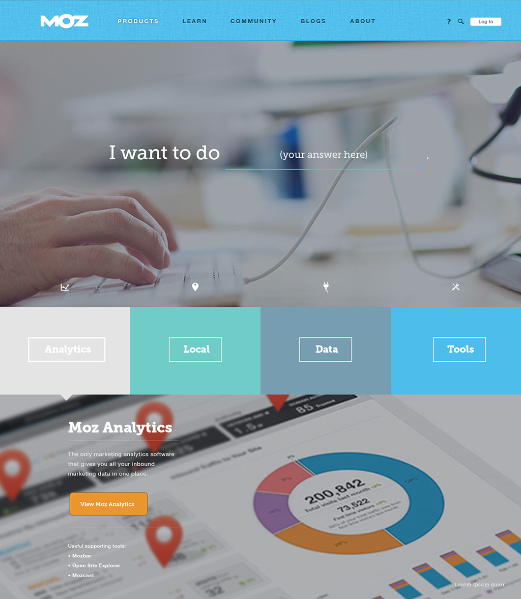
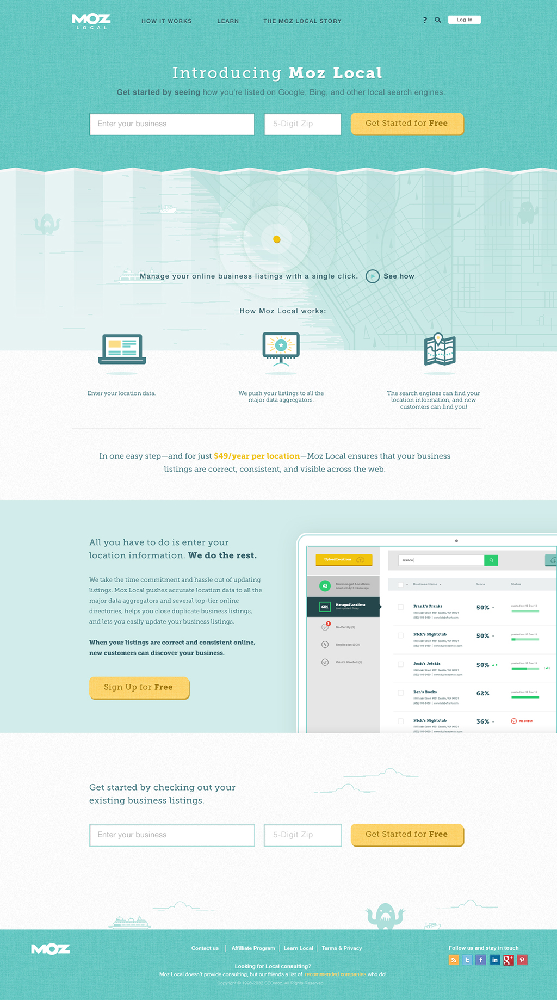
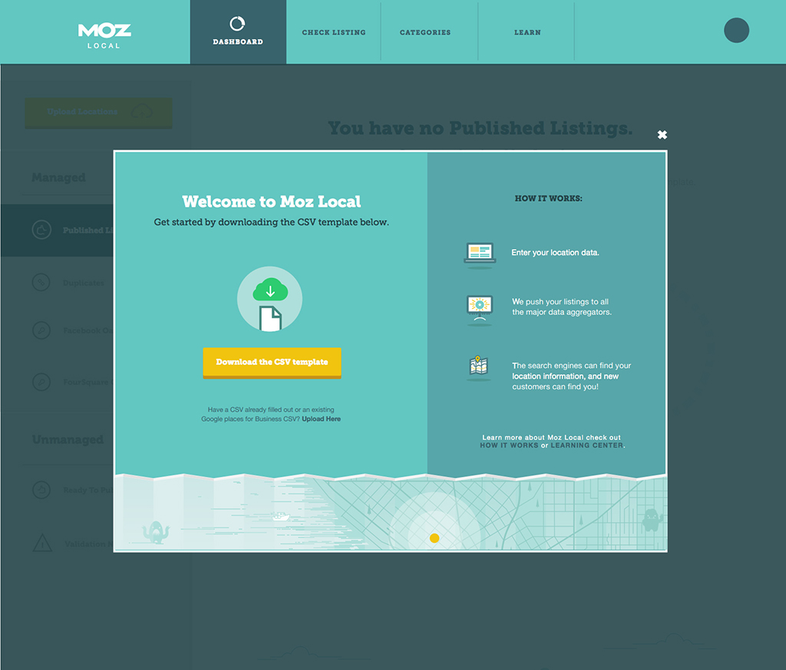
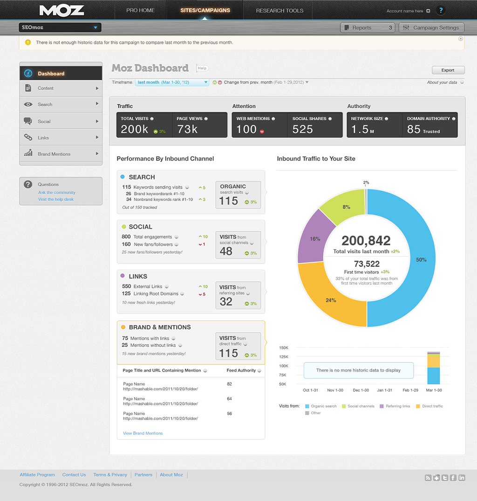
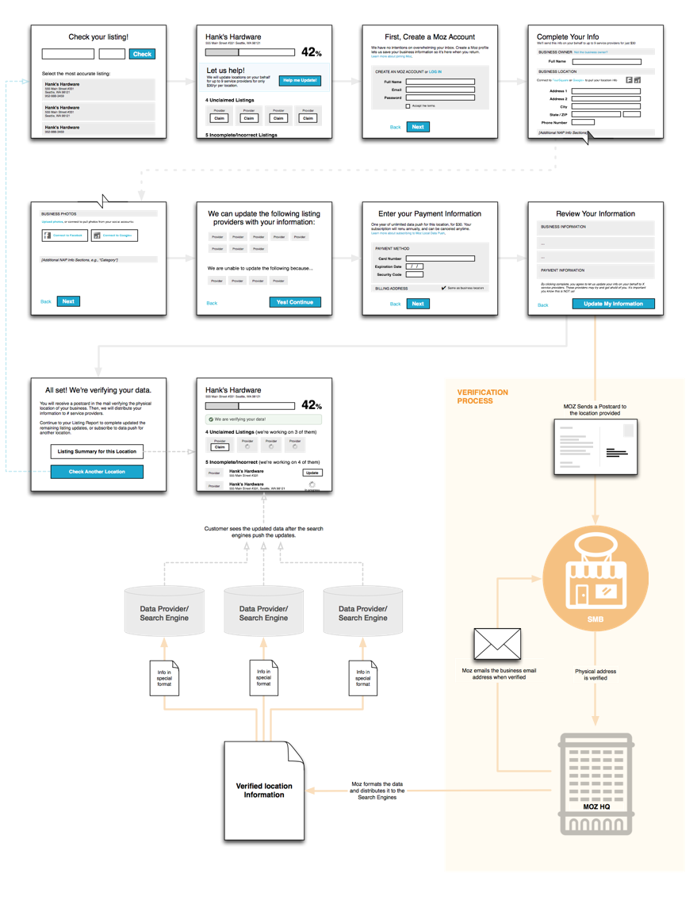
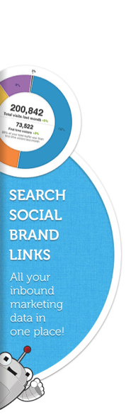

Frontpage Redesign Announcing a New Product
Alternate frontpage design. We did extensive A/B testing with variations of the frontpage.

Product Page Concept
Allow for both direct and scenario based product selection. Select an answer and the products that apply will highlight below.

Alternate Product Page Design
Used during A/B testing.

MozLocal Product Branding and Homepage Design

MozLocal First Experience
As with any of the Moz products there is a significant amount of work that needs to be done before the user is in a state where data is gathered and insights are generated. We had a number of ways to do this from introduction and setup wizards to inline messaging for sections that didn't have any data yet to email notifications. And as always at Moz, it was very important to introduce just the right level of humor and fun into any of the experiences.


Moz Analytics Dashboards

Redesign: edgy concept. We only partially went this route. Scaled back some of the more experimental data visualization to focus mostly on comprehension.

Moz Analytics Setup Wizard
Since getting data and actionable insight as quickly as possible, we greatly improved the setup experience so all necessary data was gathered from users as early as possible.

Mini Wires Toolkit Example
We came up with the concept of mini-wires. These are basically very light-weight wireframes that have just enough detail to be able to iterate with all the different disciplines on the taskflow and information architecture, but not too much that reviews quickly revolve in discussing small UI details. UX Strategist on the team evolved these into a very useful tool.

Marketing Materials
About half of my team at Moz worked on creating massive amounts of marketing materials. From ad banners, to sites, to whitepapers, to physical things such as Roger (mascot) clothing and dolls. My team even significantly contributed to the Moz office interior design when we moved into a new space.



What Colleagues Say
"It's not often you have a manager that effects a company in such a positive way as Daan did at Moz. He really cares about the people on his team and went out of his way to ensure that we all grew as professionals. Daan put in place a design process that we still use here at Moz."
"Daan set a process in place that allowed us to easily manage our goals and pushed us to be the strong voice of design. He has the ability to nurture the skills that someone has and guide them in the right direction. His feedback and leadership helped me develop as an individual."